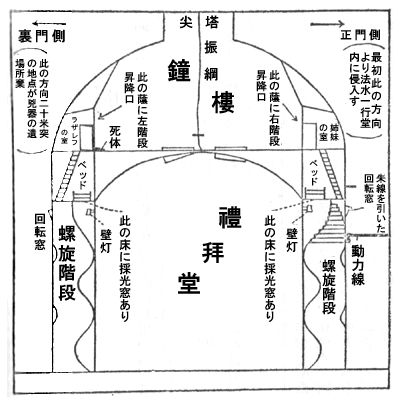

| 聖アレキセイ寺院の惨劇 | |
| 小栗 虫太郎 | |
| (2012) | |
聖アレキセイ寺院の惨劇
小栗虫太郎
聖アレキセイ寺院――。世俗に聖堂と呼ばれている、このニコライ堂そっくりな天主教の大伽藍が、雑木林に囲まれた東京の西郊Ｉの丘地に、Ｒ大学の時計塔と高さを競って聳
り立っているのを......。そして、暁
の七時と夕
の四時に嚠喨
と響き渡る、あの音楽的な鐘声
も、たぶん読者諸君は聴かれたことに思う。
ところで、物語を始めるに先立って、寺院の縁起を搔い摘んで述べておくことにしよう。――一九二〇年十月極東白衛軍の総帥アタマン・アブラモーフ将軍が、ロマノフ朝最後の皇太子に永遠の記憶
を捧げたものが、このとてつもない阿呆
宮だった。そして、一九二二年十一月までが、絢爛
たる主教の法服と煩瑣
な儀式に守られた神聖な二年間で、その間はこの聖堂から秘密の指令が発せられるごとに、建設途上にあるモスクヴァの神経をビリッとさせる白い恐怖が、社会主義連邦のどこかに現われるのであった。ところが事態は急転して、日本軍の沿海州撤退を転機に極東白系の没落が始まり、瞬
く間に白露窮民の無料宿泊所と化したのであるが、一時は堂に溢れた亡命者
達も、やがて日本を一人去り二人去りして、現在
では堂守のラザレフ親娘
と聖像
を残すのみになってしまった。それにつれて、祈禱の告知だった美しい鐘声
も古めかしい時鐘
となってしまい、かぼそい喜捨
を乞い歩く老ラザレフの姿を、時折り街頭に見掛けるのであった。
さてこうして、聖アレキセイ寺院の名が、白系露人の非運と敗北の象徴に過ぎなくなり、いつかの日彼等の薔薇
色であった円蓋
の上には、政治的にも軍事的にも命脈のまったく尽きたロマノフの鷲
が、ついに巨大な屍体
を横たえたのであるが、その矢先に、この忘られ掛けた余燼
が赫
っと炎を上げたと云うのは、荒廃し切った聖堂に、世にも陰惨な殺人事件が起ったからである。（読者は次頁の図を参考としつつお読み願いたい。）

推理の深さと超人的な想像力によって、不世出の名を唱
われた前捜査局長、現在では全国屈指の刑事弁護士である法水麟太郎
は、従来
の例だと、捜査当局が散々持て余した末に登場するのが常であるが、この事件に限って冒頭から関係を持つに至った。と云うのは、彼と友人の支倉
検事の私宅が聖堂の付近にあるばかりでなく、実に、不気味な前駆があったからだ。時鐘の取締りをうけて時刻はずれには決して鳴ることのない聖堂の鐘が、凍体
のような一月二十一日払暁五時の空気に、嫋嫋
とした振動を伝えたのである。
それも、ホンの一二分程の間で、しかも低い憂鬱な鳴り方であったが、その音が偶然便所に起きた検事の耳に入った。すると、俊敏な検事の神経にたちまち触れたものがあったのだ。と云うのが大正十年の白露人保護請願で、とりわけその中に、――当時赤露非常委員会
の間諜
連が企てていた白系巨頭暗殺計画に備えて、時刻はずれの鳴鐘を以って異変の警報にする――と云う条項があったからである。そこで、検事はさっそく付近の法水に電話をかけ、聖堂の前で落ち合うことになった。前日の夕方から始まった烈風交
りの霙
が、夜半頃に風が柔らぎ、今ではまったく降りやんだのであるが、依然厚い雪雲の層に遮
られて、空のどこにも光がない。その中を歩んで行くうち、ふと正門近くで法水は不思議なものにぶつかった。小さな人型
をした真黒な塊が、突然横町から転がり出したのである。法水がほとんど反射的に誰何
すると、その人型は竦
んだように静止して、しばらくは荒い呼吸の喘
ぎが聴えていたが、やがて、つかつか前に進み寄ってきた。まず、身長三尺五寸程と思われる小児の姿が法水の眼に映ったのであるが、なんと意外なことには、次の瞬間幅広い低音
が唸
り出した。
「へい、私はヤロフ・アヴラモヴィッチ・ルキーン。」露西亜
人だ――いやに落つき払っていとも流暢な日本語で、「舞台の名は一寸法師の［＃「一寸法師の」は底本では「一寸法帥の」］
マシコフと云う、寄席の軽業芸人なんで。」
「ああ、侏儒
のマシコフ⁉」法水には、かつて彼を高座で見た記憶があった。特に強い印象は、重錘揚
選手みたいに畸形
的な発達をした上体と、不気味なくらい大きな顔と四肢
の掌
で、肩の廻りには団々たる肉塊が、駱駝
の背瘤
のように幾つも盛り上っていた。年齢は法水と同様三七、八がらみ、血色のよいヤフェクト風の丸顔で額が抜け上り、ちょっと見は柔和な商人体の容貌であるが、眼だけは、切目
が穂槍
形に尖っていて鋭かった。
その時、二人を発見して歩み寄ってきた検事が、不意に背後から声を掛けた。
「一体こんな時刻に、どうしてこの辺を彷徨
いているのだね。僕は地方裁判所の検事なんだが。」
「実は、飛んだ罪な悪戯
をした奴がおりましてな。」不意を喰って愕然
と振向いた態
のままで、ルキーンは割合平然と答えた。
「皇帝
への忠誠一筋で、うっかり偽電報を信用したばかりに、あたらの初夜を棒に振ってしまいましたよ。」
「初夜⁉」検事は唆
られ気味に問い返した。
「さよう、不具者
の花嫁は、ここの堂守ラザレフの姉娘ジナイーダなのです。無論われわれには式なんぞありませんが、いよいよ最初の夜が始まろうと云う矢先でした。かれこれ十一時頃だったでしょうか、皮肉なことに、突然同志から電報が舞い込んできて、二時までに豪徳寺駅付近の脳病院裏へ来い――と云います。しかし、結局私には、寝室の歓楽よりも同志の制裁の方が怖ろしかったのです。それで、厭々
出掛けましたよ。」
「同志とは？」検事は職掌柄聴き咎
めた。
「新しい白系の政治結社です。それに、レポとしての私の体
には、先天的に完全な隠身術が恵まれています。これは公然
に申し上げてもよいことでしょう。」ルキーンは傲然
と志士気取りに反
り返った。「何しろ、お国のある方面から非常な援助を頂いているのですからなア。怖ろしいのはＧＰＵ
の間諜網だけですよ。」
「なるほど、トロツキーが驢馬
の脳髄と云っただけのことはあるね。」法水が皮肉に笑うと、ルキーンはちょっと厭な顔をしたが、先を続けた。
「ところがどうでしょう。霙の中に二時間余り曝
されていても、脳病院の裏には人っ子一人来ないのです。そこで始めて、あの電報が、私の幸福を嫉
んだ悪党の仕業だったと云うことが判りました。そして、歩いて帰るよりほかに方法がなくなってしまったのです。」
「しかし、君はそんなに疲れている癖に、現在僕の前へは鉄砲玉のように飛び出したじゃないか。」法水は叩きつけるような語気で云った。
「鐘の音を聴いたからです。われわれの同志の間では、刻限はずれの鐘を変事の警報にしているのです。」ルキーンは身体
を焦
だたし気にもじらせて、声を慄
わせた。「鳴ったと思うとすぐやんでしまったのと云い、あの弱々しい音を考えると、なんだか私には、鐘の振綱に触れた手を、理不尽に横合いから遮られたような気がするのです。つまり、すでに行われた変事の発見ではなくて、異変の進行中に鳴らされた救助信号ではないかと思うのです。しかも、それ以前に私は、偽電報で釣り出されています。」
「行こう」検事はたまりかねて叫んだ。「なるほど、鴉
や鳶
ぐらいでは、あの鐘はビクともしないぜ。」
不思議な侏儒
ルキーンの出現は、それまで多寡
を括
っていた、法水の鐘声に対する観念を一変させた。そして彼は、凄惨な雰囲気の中に、一歩踏み入れたような気がした。...少なくとも、鐘声と一寸法師とが［＃「一寸法師とが」は底本では「一寸法帥とが」］
偶然の逢着でさえなければ、因果関係の結論として、いかなる形体
にせよ、聖堂の中へ残されたものがなければならない。凍った地面がバリバリ砕けて、下の雪水が容赦なくはねかかった。やがて、幾百と云う氷柱
で薄荷糖
のように飾り立った堂の全景が、朧気
に闇の中へ現われた。
出入口の把手
を捻
ってみると鍵が下りているので、ルキーンは検事を振り仰いで、
「一つ、そこに下っている綱を引っ張ってみて下さい。それで鳴る鳴子
が親爺
の方にも娘の方にも、両方の室にあるのですから。」
ところが、検事が懸命に引く鳴子に対して、内部
から誰一人応ずるものがない。そのくせ、内部で鳴っている音が、戸外
にいる彼等にも判然と聴き取れるので......、今か今かと待つうちにも、よほどの時間が経過してしまった。
「ただごっちゃないぞ。」奥歯をギリリと鳴らして、検事が綱から手を放すと、その手に法水は合鍵の束を与えた。そして、七本目がようやく合って、扉
が開かれた。
法水の細心な思慮は、いち早く階段を駈け上ろうとする二人を引き止めて、まず検事に、今入った入口の扉際で張り番をさせ、自分はルキーンを伴って、階下の室々を調べ歩いた。荒れるに任せた礼拝堂は、廃墟のような風景であった。円天井
の下には、十ばかり聖像
があるのみで、金色燦然たる天主教の聖器類は影も形もなく、装飾箔を剝がした跡さえ所々に残っていた。法水の調査は、便所と急造の炊事場を最後に終ったが、どこにも人影は愚か、異状らしい個所は発見されなかった。
検事のいる扉際に戻ると、法水は鐘楼に出る左側の階段を上り、検事とルキーンは右側のを上って行った。
「これが解せないのですよ。」緩く迂回
しながら伸びている階段の中途の壁に、点
け放しになっている壁燈
を見て、ルキーンが云った。「戸外
から見た時、明るい窓が一つあったでしょう。それがこっち側の回転窓を通して見た、この壁燈の光なんです。点
け放しなんて――こんなことは、ラザレフの吝嗇
が狂人にでもならなけりゃ、てんでありっこないのですがね。」
その時、検事がルキーンの袖を引き、無言で天井の床を指差した。そこには硝子
窓の明り取りが開いていて、背の高い検事には、そこから、静止している二人の女の裸足が見える。寝台にならんで腰を下しているらしい。ルキーンは二三段跳び上って、
「アッ、影が動きましたぜ。してみると、姉妹には別条ありません。ヤレヤレ、飛んだ人騒がせだったぞ。いや、たぶん鐘声などにも、案外下らない原因があるのかもしれませんよ。」
「それにしても、起きているくせに、さっきはどうして応
えなかったのだろう。」検事は腑
に落ちぬらしく呟
いたが、ルキーンはなぜか急に当惑気な表情を泛
べて、答えなかった。
鐘楼はまったくの闇だった。上方から凍えた外気が、重たい霧のように降
り下って来る。二人の前方遙
か向うには、円形の赭
い光の中に絶えず板壁の羽目が現われて、法水の持つ懐中電燈が目まぐるしい旋回を続けていた。それがようやく一点に集注されると、ルキーンはアッと叫んでドドドッと走り寄った。半ば開かれた扉の間に、長身瘦軀
の白髪老人が前跼
みに俯伏
して、頤
を流血の中に埋めている。
「ああ、ラザレフ‼」ルキーンはガクッと両膝を折って、胸に十字を切った。「フリスチァン・イサゴヴィッチ・ラザレフが......」
「絶命しているのかい？」検事が片膝をつくと、法水は屍体
の左手をトンと落して、
「ウン、咽喉
をやられたんだ。兇器が屍体付近にないのだから、明白な他殺だよ。それに、こんな低温の中でまだ体温が残っているし、硬直が始まり掛けたところだからね。絶命はたぶん四時前後だろうが、その一時間後に鐘が鳴っているんだ。」と云ってからルキーンに、「君、開閉器
はどこだね？」と訊
ねた。
「いや、鐘楼には電燈の設備がないのです。それから、姉妹には別条ないようですが。」
「それが、起きているのだから妙なんだよ。」検事が口を挾
んだ。「鳴子の音を聞いても返事しなかったのは、事によると、姉妹はこの事件のことを知っていて、僕等に妙な感違いをしたのかもしれないがね。」
「何にしても、それは大したことじゃない。しかし電燈がないと、明け切るまで待たなくてはならんな。」法水は悠長な言葉を吐いたが、さっそく検事に手配を依頼して、その最後に、警察医と本庁の課員以外は構内に入らせぬようにして欲しい――と云う旨を付け加えた。
それから三十分後に、検事が警察医を伴って上ってくるまでは、暗黒の中で屍体を挾んだ二人の無言の行であった。ただルキーンが、
「やっぱりワシレンコだな。あいつも可哀そうに。」とかすかに呟くのを聴いたのみで、それを法水が問い返そうとした時、階段を上る跫音
［＃ルビの「あしおと」は底本では「あしあと」］
が聞えたのであった。しかしもうその時には、塔の上層に黎明
が始まっていて、鐘群の輪郭が暈
っと朧気
に現われて来た。
「上の小鐘は暗くて判らんが、下にある大鐘だけは二つ見える。」警察医が屍体を検案している方には見向きもせず、法水は仰向いて独語した。「床から円蓋
の頂点までが五米
ぐらいか、それから鐘までも同じぐらいあるだろう。」
「そうです。」ルキーンが合槌を打った。「鐘は全部尖塔の頂にある窪
みの中に隠れていて、大鐘の裾
が塔の窓にチョッピリ覗
いているくらいなんですから、どんな暴風
にでもビクともしませんぜ。二つの大鐘の上に小鐘が八つあって、綱を引くと最初に小鐘が鳴り、続いて大鐘に及んで行く装置
になっているのです。それから、鐘の横軸を支えている鉄棒は、頂辺
まで伸びて大十字架になっているんですよ。」
法水は試みに綱を引いてみた。鐘は両手でやっと引ける程の重量だったが、果してルキーンの云う通り、最初小鐘が明朗たる玻璃
性の音響を発し、続いて荘厳な大鐘が交った。彼はそれによって、鐘の鳴る順序が不変の機械装置によること、二つの大鐘がそれぞれ反対の方向へ交互に振動する――などを知った。それから少し経って、呼息
が白い煙のように見え始めて来ると、今度はルキーンの服装に気がついた。帽子外套からズボンまですべて護謨
引きの防水着で固め、しかも全身ずぶぬれである。
やがて、警察医の報告が始まった。
「死後約二時間半と云うところでしょうな。兇器は洋式短剣
ですよ。創道は環状軟骨の左二糎
程の所から最初刃を縦にして抉
りながら斜
上に突き上げているのですから気道は水平の刃で貫いてあります。そして、頸椎
骨の第二椎辺をかすめた所が創底
になっているのですぞ。」
それにいちいち点頭
きながら、法水は屍体の不自然な形状
を凝然と見下している。屍体は寝衣
の上に茶色の外套を羽織り、腰を奇妙に鉾
立ててしゃがんだ恰好
のまま上半身を俯伏しているが、両手は水牛の角のような形で前方に投げ出し、指は全部鉤形
に屈曲している。その傷口の下が、流れ出した血で湖水のような溜りだ。が、それには、周囲の床から扉の内側にかけてわずかな飛沫
が飛び散っているのみのことで、どこにも乱れた個所がない。無論それによって、格闘の跡は愚か、死体が刺された以後に動いた形跡のないことまで明白に立証されるのであるが、その推定をさらに裏書しているのが両手の指先であって、それには、傷口を押えたと見なければならぬ血痕が付着していないのである。――そして、鐘楼にはその一円以外に、付着した血痕の存在が発見されず、兇器を捜した検事も空しく戻って来た。
「どうも解
せんな。気管を切断されただけで雷撃的に即死するはずはないが、」法水はそう呟いて、死体の頭髪を摑みグイと引き上げた。「大体創道を見給え。こう云う方向から行われているのは、これまでの短剣殺人にはかつて例のなかったことだよ。しかも、沈着巧妙に頸動脈を避けて、たった一突きだぜ。それがまた、この奇妙な鉾立腰
にぶつかると、一体犯人がどんな姿勢で突いたのだか？――すっかり判らなくなってしまうのだよ。それから、顔面が無残な苦痛で引ん歪
んでいるにもかかわらず、たとえ十数秒の間でも床上を輾転反側した跡がない。無論手足に痙攣
らしいものが見えるけれども、それには明確に表出がないのだ。すると支倉
君、君はこれを見てどう思うね？」
検事は答えられなかったが、法水がいちいち指摘する屍体の不可解な点に、早くもこの事件の底深い神秘が現われているように思った。法水はそれから屍体の両腕に視線を落し、それを交互に摑んで、何か比較するものがあったらしかったが、続いて両眼を詳しく調べて、
「溢血点
があるな。」と呟くと、今度は屍体を仰向けにした。すると、股下の辺
りから――ちょうど閾
から一寸程下った所に当るのだが――真鍮製
の手燭が現われた。それは、直径五寸ばかりの鉢型をしたもので、堆
状の火山型をした残蠟
が鉄芯
の受金を火口底のようにして盛り上っている。そして、その間から百目蠟燭
にも使えそうな太い鉄芯が、真黒に燻
ってニョッキリ突き出ていて、燃え尽きた芯がその裾の方で横倒しになっていた。ところが、手燭のあった辺の着衣を調べると、焦痕は愚かやや水平から突出している鉄芯の痕
らしいものさえ見出されないのである。それも後で差込んだものでないことは、床から手燭の裾にかけて、微
かながら血の飛沫
があるので明瞭だった。
「何だい？ 大変な執念じゃないか。」手燭を置くと、法水の眼がふたたび屍体の両腕に引かれて行くので、検事は訊
かざるを得なくなった。
「ウン、左腕が内側へ曲っているだろう。今に君は、それが非常に重大な点だと云う理由が判るよ。」それから法水はルキーンを見て、
「君が昨夜ここを出る時に、この蠟燭
がどのぐらいの長さだったか憶
えているかね？」
「さよう、五分
ばかりでしたかな。しかし、その後にラザレフが使ったかもしれません。」
法水は困ったような表情をしたが、すぐ着衣を脱がして屍体の全身を調べ始めた。微かに糞尿を洩らしているだけで、外傷はもちろん軽微な皮下出血の跡さえ見られない。が、腹の胴巻には札
らしい形がムックリ盛り上っている。
「これです。」ルキーンは忌々
し気
に云った。「これがラザレフ唯一の趣味なんですよ。守銭奴
です。こいつは。だから、可哀そうなもんですぜ。電燈料を吝
んでいるのですから、姉妹二人とも薄暗い石油洋燈
の光で、それも、少しでもながくともせば、こいつが大騒ぎなんです。」
屍体の検案を終ると、法水はラザレフの室に入って行った。その室は、礼拝堂の円天井と鐘楼の床に挾
まれた空隙を利用しているので、梯
状に作られてあった。扉に続いて二坪程の板敷があり、それから梯子
で、下の寝室に下りるようになっている。そこには、姉妹の室で見たと同じ採光窓
が床にあいていて、その上を太い粗目
の金網で覆うてあった。こう云う奇妙な構造と云い、また、この室の存在が外部からは全然想像されないのを見ても、その昔白系華やかなりし頃には、恐らく秘密な使途に当てられていたらしく思われた。しかし、室内は整然としていて、結局法水は何物にも触れることが出来なかった。
それから、向う側にある娘達の室へ行くまでに、一つの発見があった。と云うのは、礼拝堂の円天井に当る部分の中央の床に、二個所彩色硝子
の採光窓があいていて、そこから振綱の下にかけて、わずかではあるが、剝
がれ落ちたらしい凝血の小片が散在していることであった。しかし、法水はそれには一瞥
をくれただけで、振綱の下から三尺程の所を不審げに眺めていた。そこには、短い瓦斯
管が挾んであるのだが、やがて彼は、その下から何物かを抜き取ると、それを手早くポケットに収め、そのままスタスタ歩き出した。姉妹の室の扉には掛金が下りていて、しかも鍵は、鍵穴の中に突っ込まれたままになっている。
「鍵にはないけども、」そう云って、検事は扉の前方の床に、わずか飛散している血粉を指摘した。「して見ると、始末の不完全な手で、犯人はよほど複雑な動作をしたと見えるね。」
そこへドヤドヤ靴音がして、外事課員まで網羅した全機能を率いて、捜査局長熊城卓吉
が肥軀
を現わした。法水は頓狂な声をあげて、
「いよう、コーション僧正！」
しかし、熊城の苦笑は半ば消えてしまい、側のルキーンを魂消
たように瞶
めていたが、やがて法水の説明を聴き終ると容
を作って、
「なるほど、純粋の怨恨以外のものじゃない。手口に現われた特徴も、犯人が相当の力量を具えた男――と云う点に一致しているよ。」ともったいらしく頷
いた。そして、さっそく部下に構内一帯に渉る調査を命じたが、程なく堂外の一隊を率いた警部が、ひどく亢奮
して戻ってきた。
「実にどうも、得体が判らなくなりまして。最初入った貴方
がた三人以外に、足跡がないのですからな。昨夜
は二時頃に降りやんでいるのですから、凍った霙
の上についたものなら、われわれでなくとも子供でさえ判らなけりゃなりません。それから兇器は、裏門側の会堂から二十米
程離れた所で、落ちていた紙鳶
を突き破っていたのです。」
そう云って、警部は一振りの洋式短剣
を突き出した。銅製の鍔
から束
にかけて血痕が点々としていて、烏賊
の甲型をした刃の部分は洗ったらしい。それがラザレフの所有品で、平生扉の後の棚の上に載せてあることが、すぐルキーンによって明らかにされた。そして、紙鳶は比較的最近のものらしい二枚半の般若
で、糸に鈎切
がついていた。
「まさか、使者神
の靴を履
いたわけじゃあるまいよ。」法水が動じた気色を見せなかったように、他の二人も、足跡を残さずにすむ脱出径路と不可解な兇器の遺留場所を解くものが、漠然と暗示されているような気がして、必ずや鐘楼内から、それを鑑識的に証明するものが、現われるに違いないと信じていた。だから、熊城はむしろ部下の狼狽振りに渋面を作ったほどで、さっそく法水に姉妹への訊問を促した。
扉が開かれてまず眼に映ったのは、この室の構造がラザレフの室と同一であると云うことだった。その時梯子を下りかけていた妹娘のイリヤは、愕然
としたように振り向いたが、警部の正服を見ると、すぐ険しい緊張を解いた。その六尺近い豊かな肉付きは、まさにアマゾンと云う形容であろう。そして、直線と角のまるでない平和な丸顔を見ると、邪気
ない単純な性格らしく思われるが、ときどき顔の向けようによって、積極的な意志と細心な思慮を隠しているとしか思われない、深い陰影が作られるのだった。彼女は男のような幅のある声で姉を呼び、少しも動じた気色を見せない。
姉のジナイーダは寝台の下にある屎瓶
を布片で覆うてから、悠然と上って来たが、二七、八になるらしい彼女の神々しい美しさには、粗服の中にも聖ベアトリチェの俤
があった。それが、高い思索と叡智を語るものであることは云うまでもないが、全体の感じは妹とは違い非常に複雑で、侵し難い厳
かさの中にも、脆
い神経的な鋭さと、瞑想めいた不気味なものとの両面が包まれているように思われた。それだけに、烈酷
な実行力を認めることは出来なかった。しかし、これらの特徴以外に法水に注目されたのは、ジナイーダとルキーンとの対照がむしろ悲劇的に隔絶していることと、父の変死を伝えても、姉妹二人には睫毛
の微動すら見られなかったことである。
「一昔前は神父フリスチァンと呼ばれた父が変死を遂げても、それが当然だと申さなくてはならないのですから......」ジナイーダは唇を歪めて、まず父親の死に冷たい嘲
りの色を現わした。
「でも、御実父なのでしょう？」
「ところが、養父でございます。両親を一時に失った私ども二人は、慈愛深い神父フリスチァンの手許
に引き取られて、その後を実父にも優った愛
みの下に育てられて参りました。イリヤは父の手許で、私は年頃になってから、かねての希望通り修道院に......。その頃、父はキエフの聖者と呼ばれておりましたのですが、」しかしジナイーダは、ピインと眉をはね上げて次の言葉に移った。
「ところが、一九二五年にいよいよ私のおりました僧院が破壊されたので、当時巴里
に移っていた父のもとに戻らなければならなくなりました。すると、そこに以前とは似てもつかぬ父を見出したのでございます。ああ、なんたる変り方でしょう⁉ 父はいつの間にか、聖職を捨ててしまって、聖器類を売払った金を資本
に、亡命人
達の血と膏
を絞っているのです。そして、無論私達に対する態度も、昔の父ではございませんでした。」
「あり得ることです。」法水は重たげに頷
いた。「革命の衝撃
ですよ。大戦後の性格の激変で、それが因
で起った悲劇は、かなりな数に上っていると云う話ですからね。で、その後は？」
「それから父は、過去
った日の栄光
を、真黒に汚れた爪で剝
ぎ毮
って行きました。なかにも、わずかな金に眼が眩
んだばかりに、ニコライ・ニコラエウィッチ大公のもとで例の『ジィノヴィェフの書翰
』を偽造したぐらいですから。ですから、同志と不和を起して日本に渡った後も、やはり窮迫した人達を絞った金で、ここの堂守の株を買ったのでございます。サア、怨恨の心当りって⁉ そう云った日には、東京中の白露人全部が嫌疑者にならなくてはなりませんわ。あの貪欲と高い利息とでは、いくら勘忍強い神様でもお憎しみにならずにはいられないでしょう。ですから、現在の父を見て昔の高い感情を考えると、私にはどうしても、それが同じ人間だとは思われないのです。」
そこで、法水の質問はいよいよ本題に転じて行った。
「ところで、鐘の音をお聴きになったでしょうな。」
「ところが、それ以前に気味の悪いできごとがございまして。四時半頃眼が醒めると、階段の壁燈が点
っているのです。父は御存知の通りなので、ルキーンが戻ったかなとも思いましたが、来れば鳴子が鳴るはずです。しかし、大して気にも留めずにいたところが、間もなくこの室の扉の前辺から離れて、コトリコトリと遠ざかって行く跫音
が、鐘楼に起りました。」
「それには、何か特徴がありましたか？」
「それが、通例の歩き方で二歩のところが一歩と云う具合で、非常に一足ごとの間が遠いのです。何か考えながら歩いているようでした。」
「すると、妙なことになりそうですね。」そう云って法水は黙考に沈んだ。が、やがて顔を上げた時には、顔色が死人さながらに蒼
ざめていた。「確かあなたは、お父さんの亡霊が歩いていたと云われるのでしょう。ですが、その一時間も前に、絶命が医学的に証明されているのですよ。」
まさに、心臓が一時に凝縮したと云う感じだった。それより、一体どこに推定の根拠があるのか？――法水の意外な言葉に、周囲
の人々はいっせいに驚かされた。が、ジナイーダだけは水のように静かだった。
「医学的にどうこうは、問題ではございません。この世界は、計り知れない神秘な暗号と象徴に充ちているのですから。私は、正しくそれが父だと信じております
。しかも、その音は非常に明瞭
しておりまして、聴き誤まる惧
れは毛頭もなかったのです。またたとえそれが、肉体の耳では聴えぬ消された音であったにしても、必ずや私には、異ならない啓示となって現われたに違いございません。」
なんたる厳粛さであろう⁉ 法水もそれに酬
いるかのよう、沈痛な声音で応じた。
「なるほど。しかし、ハインリッヒ・ゾイゼ（十三世紀独逸
の有名な神学者）がしばしば見た耶蘇
の幻像と云うのは、その源が親しく凝視
めていた聖画にあったと云いますがね。それに、誰やらこう云う言葉を云ったじゃありませんか。――自分の心霊を一つの花園と考え
、そこに主が歩みたもうと想像するこそ楽しからずや
――とね。」
最後の一句が終らぬうちに、ジナイーダの総身に細かい顫動
が戦
いた。が、次の瞬間、彼女はカラカラと哄笑
って、「これは驚きましたわね。私を犯人に御想像なさるとは恐縮ですわ。私達が現在父からどんな酷
い目にあわされていようと、孤児院から救ってくれた大恩を考えれば、そんなことなんでもないことですわ。この点をとくと御記憶下さいまし。それに、もう一つ法水さん、永い間費
って自然科学が征服したものと云うのが、カバラ教や印度
の瑜伽
派の魔術だけに過ぎないと云うこともね......」
法水は、神学
との観念上の対立以外に、嘲笑を浴びたような気がしたが、ジナイーダは相手の沈黙を流眄
に見て、いよいよ冷静に語
を続ける。
「で、ともかく洋燈
を点して、覗
こうと致しますと、外側から鍵を下したと見えて、扉はビクとも致しません。そこで妹を起しましたが、二人とも恐怖のために、梯子を上って洋燈を消しに行くことさえ出来なかったのです。すると、そのうち程なく鐘が鳴り始めました。」
「それが妙なんですわ。」イリヤが口を挾んだ。「最初にゴーンゴーンと大鐘が鳴り出して、それから小鐘が始まったのですから。」
「エッ、なんですって⁉」法水は一度で血の気を失ってしまった。ところが、ジナイーダも口を添えて、イリヤの前言を繰り返すのだった。
それこそ、文字通りの鬼気であろう。鳴鐘の機械装置はいかなる方法によっても、そう云う顚倒
した鳴り方を許さぬのである。大体法水にしろ、鐘の鳴った原因を犯人の行動の一部に結びつければ、この事件には芥子粒
程の怪奇もないと信じていた矢先に、イリヤの一言はたちどころに推理の論理的な進行を破壊してしまった。検事もブルッと身慄
いして、
「そう云えば、たしかにそうだったよ。僕は大変なところをうっかりしていたもんだ。」
法水は堪らなくなったように扉の外に飛び出して、何度も鐘を振り仰いでいたが、それを見て、拡大鏡を振り廻していた一人の刑事が側に寄って来た。
「法水先生、鐘ですか？ しかしあの大鐘は今も上って見たところですが、二三人かかって手で押したくらいでは、歯車があるのでビクともしませんぜ。また、内部の振錘
を手で動かしたにしたところで、音だけは妙に詰ったような鳴り方をしますが、肝腎
の鐘が動かないのですから、振動を上の小鐘に伝えることが出来ないのです。」
「なるほど、すると、鐘を傾けるのは、振綱以外にないと云うのだね。いや有難う。」
法水はふたたび姉妹の室に戻ったが、こうして鐘の性能いっさいを知り尽してしまうと、もうこの上、鐘声の不思議を科学的に考察する余地はないと思った。第一それより、なにゆえ鳴らされねばならなかったか？――が判らなくなってしまった。それがもし犯人だとすれば、どうして自分自身の存在を曝
け出すような危険を冒してまで、あえてする必要があったのだろうか？（それに安易
な解釈法を当てると、鐘が鳴った時、下の鐘楼には死体のほか誰一人いなかったと云う結論になってしまうのだ。）しかし死体になったはずのラザレフが歩いていたと云うジナイーダの言を考えると、肉体を離れた執拗な魂魄――ある種の動物磁気にすこぶる鋭敏だと云う説であるが――それを操って、跫音
を現わし一方では、鐘を奇蹟的に動かした、一人の神現術者
が存在するのではないかとも思われる。だが、そう考えることは、彼にとってこの上もない屈辱だったのだ。やがて、法水は今までにない緊張をこめてジナイーダに問いを発したが、その内容は雑談以上のものとは思われなかった。
「時に妙な質問ですが、貴女
がいられた修道院と云うのは？」
「ハア、ビーンロセルフスクにありましたが、」
「すると、何派ですか。」
「トラヴィストでございます。」
「ああ、トラヴィスト。」それだけで法水の言葉がブッツリ杜絶
れたが、その後数秒に渉
って、二人の間に凄愴
な黙闘が交されているように思われた。しかし、その時鑑識課員が姉妹の指紋を採りに入ってきたので、偶然緊迫した空気が解
れて、一同はやっと一息吐
くことが出来たのである。
その間、法水は側の置洋燈
を調べていたが、偶然注目すべき発見にぶつかった。そのナデコフ型置洋燈と云うのは、電燈普及以前露西亜
の上流家庭に流行
ったもので、芯
の加減捻子
がある部分にそれがなく、そこが普通型のものより遙かに大きく小大鼓形をしている。そして、鎧扉
式に十数条の縦窓が開くようになっていて、そこから外気が入ると、上方の熱い空気との間に気流が起って、それが中央の筒にある弁を押して回転させ、徐々に芯を押し出すのである。しかし、法水に固唾
を呑ませたものは、この装置ではなく、安手の襟飾
を継ぎ合せて貼ってある、台の底だった。彼が何の気なしにそれを剝がして見ると、内側の洋皮紙に――イワン・トドロイッチよりニコライ・ニコラエヴィッチ大公に贈る――と認められてあった。それを肩越しに見て、一人の外事課員が驚いたように云った。
「これですよ――四年程前巴里
警察本部から移牒のありましたのは。大公の死後に、手ずから書かれた備品目録の中から、カライクの宝冠と皇帝
の侍従長トドロイッチから贈られたこの置洋燈が紛失しているのです。」
「道理で、昼間はこれを寝台の下に隠すように、厳しく云いつけられておりました。父なら盗み兼ねませんわ。」ジナイーダが恥入ったように嘆息するのを、熊城は得たり顔に頷いた。
「いずれ劇的
な秘密のあることだろうがね。とにかく動機としての資格は充分にある。だけど法水君、そうなると、一人殺すも三人殺すも同じことになるがね。それだのに、どうして外側から下した鍵をそのままにして逃げ出したのだろう。」
「それが判れば犯人の目星がつくぜ。だが僕の想像するところでは、その原因が床の採光窓
だろうと思うね。ここから外壁の回転窓が見えるのだから、あれがちょうど階段の天井に当っているのだよ。だから、姉妹の誰か一人が金網をはずして硝子
を踏み抜きさえすれば、犯人が迂回して窓の下に着く頃には、充分戸外へ飛び出してしまうことが出来る。つまり、明敏な犯人はそう云う危険な条件を悟って、昨夜は障碍
を一つ除いたのみに止めておき、さらに次の機会を狙うことにしたのだろうと思うね。」
それから、法水はふたたびジナイーダに、
「ところで、鍵ですが、」と訊ねた。
「鍵は、父の室と兼用のものが一つしかないのです。そして、いつも父の室の花瓶の中に入れておくことに致しておりますが、どちらにも、夜分鍵を下す習慣はございません。とにかく、跫音と鐘声以外には、何も私達に触れたものがなかったことを御承知下さいまし。」
が、そう云い終ると同時に、突然ジナイーダはかすかな呻声
を発してクラクラと蹌踉
いた。法水は危く横様
に支えたが、額からネットリした汗が筋を引いて、顔面は蠟黄色を呈している。それがなんとなく、抗争する気力のまったく尽き果てた――犯罪者として最も惨
めな姿のように思われるのであるが......⁉
脳貧血を起したジナイーダを寝台に横たえてから、法水はイリヤを伴って鐘楼に出たが、その時Ｓ署員が、六時頃聖堂と十五六町程隔った地点で非常線に引っかかったと云う、三十がらみの露人を同行した旨を伝えて来た。デミアン・ワシレンコと云う名を聴くと、
「あ、とうとう、」とイリヤがルキーンと同じ言葉を呟いた。
「あの人は姉さんには大変な逆上
せ方なんですから。でも、姉さんと云う人は、人間の一番人間らしいところにはてんで興味がないのですから、一寸法師でも綺麗なワシレンコでも、同じものにしか見えないでしょうよ。」
「すると、ワシレンコは姉さんの愛人ではないのですね。」
「それどころですか、」イリヤはちょっと蓮葉
な云い方をして、「姉さんはルキーンが一番好きだと云っているくらいですわ。ですから、昨夜ルキーンとの結婚を拒んだのも、私には父に対する面当
としか思われません。実は昨夜こうなんです。――父が姉の花婿にルキーンを選んだのは、そもそも一寸法師の貯金が目当だったからです。そして、内々でかなり貰っていたらしいのですが、姉にそれを打ち明けたのがつい一昨日
の話で、それから二日の間執拗
く付き纏
って、結婚の実行を迫るのでした。けれども、姉は何と云われても一言も口をきかず、頑強に拒み続けて、父と争いながら夜になりました。すると、娘の飜心を絶望と見た父は、にわかに態度を変えて今度はルキーンに法外な金を要求するのです。無論二人の間に激論が沸騰して、一時はどうなるかと危ぶまれましたけども、折よくその場にルキーン宛の電報が舞い込んで来たので、それが、一時だけですが、危機を防ぎ止めてくれたのでした。」
イリヤがペラペラしゃべってしまうのに、法水は少からず驚いたが、何となく先手をうたれる気がして、この女は単純なようで案外莫迦
じゃないぞ――と思った。イリヤは続けて、
「姉と父の争いが一番激しかったのは、夕方五時頃のことでした。霙
が横殴りに吹き込んで来るのに、姉は振綱の下で満身に雪を浴びながら、いつまでも黙って父の顔を睨み付けているのです。それは物凄い形相でしたわ。」
「するとこれが、踏み躙
った婚礼の象徴
なんですね。」法水はポケットから泥塗れに潰
れた白薔薇
を取り出して、「たぶん姉さんのでしょうが、この髪飾りが、振綱の下から五寸程のところに引っかかっていたのです。しかし、そう判れば、もうこれには用はありません。」と床に抛
り出してから、「だが妙ですな。嫌いでなければ結婚してもいいでしょうがね。」
「それは、真実
のことを云いますと、」イリヤはポウと頰を染めて、「私がルキーンを好いているのを知っているからでしょう。旧露字体
のシラノは僧院の中から出て来るのですわ。」
「なるほど、面白い観察ですね。では、今度は階段の方を説明して下さい。」
それから。調査が階段の外壁にある回転窓に移ると、熊城は、窓硝子の中央に太い朱線が横に一本引かれてあるのを見て、
「なるほど、この壁燈が点け放しになっていたのをルキーンは不審がったと云うけれども、その理由はたしかこの朱線にある。しかし、これがどうして外から見えねばならなかったのか？」
法水は窓枠の埃
をスイと撫でて、
「半分しか開かない！、 金具が錆びついているところを見ると、永らく開かれなかったと見えるな。それからイリヤさん、窓の下に引き込んである動力線らしいのは？」
その太い二本の電線は、正門の側にある電柱まで一直線に伸びていて、その上には氷結した雪が載っていない。イリヤはその周囲全部に渉って説明を始めた。
「ええ、パイプ風琴
があった頃の動力線なんです。それから、窓の上に三尺ばかりの鉄管が、電線と並行に突き出ていますでしょう。以前は式日になると、あれにロマノフ旗を結びつけたそうです。また、鉄管に絡んでいる裸線は、私のラジオのアンテナですわ。いつだったか、陸軍飛行機の報告筒が鐘楼の屋根に落ちたことがありまして、その時塔に上った兵隊さんに頼んで、先を十字架に引っ掛けて貰ったのです。サア、これだけ判ったら、私を放免して、姉さんの看病をさせてちょうだい。」
鐘楼に戻ると、堂内担当の係員から報告がもたらされたが、それは――。両人の身体検査をしても芥子粒程の血痕さえ付着していないこと。振綱にも期待された着衣の繊維が発見されなかったこと。それから、礼拝堂の聖壇の下に間道が発見されたが、それには使った形跡がないばかりでなく、途中がまったく崩壊していて通行が絶対に不可能な事。そして最後に、指紋の無効果と、円蓋
には烈風と傾斜とで霙
の堆積がないこと――などで、すべてが空しかった。
「鐘は曲芸的
な鳴り方をするし、とうとう犯人の脱出した径路が判らなくなってしまった。それに、短剣を下から投げ上げたにしたところで、五尺とない塔の狭間
のどこかに打衝
かってしまうぜ。」検事は落胆
した態で呟いたが、法水にぜひ訊かねばならないものがあった。
「さっき君はなぜ、ジナイーダが聴いた跫音にラザレフを想像したのだね。」
法水の瞳がチカッと光ったが、彼は冴えない声を出した。
「それは、死体の左腕が内側に湾曲
っていたからだよ。歩けるところを見ると、かなり軽度なもので、おそらく発病が眩暈
を起した程度だったろうが、ラザレフの左半身は中風性麻痺に罹
っていて、それがほとんど軽快に近い症状だったのだ。麻痺が薄らいでいたと云う証拠には、腕が内側に捻
れて指先が鉤
形になっている。また、そう云う時には、肢
を曲げるのに困難を覚えるので、あの跫音をそれと想像させた環状歩行が起って来るのだ。つまり、不自由な方の足を、趾
先がガクッとならないように足掌
を斜めにして、内側から外方にかけて弧線を描きながら運ぶからだよ。すると、健康な脚を運んだ時しか音が立たないから、二足運んでも跫音は一つしか聴えない。だから、それに似た調子が連続して聴えたとしたら、当然ラザレフを想像するほかにないだろう。」
ラザレフの左半身不髄であると云うことより、法水の理路整然たる推論に驚かされたが、
「なるほど、」と熊城は深く頤
を引いて、「すると、振綱に瓦斯管が挾んである理由が判ったよ。半身のあまり自由でないラザレフは、あれに足を掛けて引く力を助けるのだ。」
「ウン、ところが熊城君、僕がズバリと云い当てたばかりに思いがけない収穫があったのだよ。」と法水の顔に紅潮
が差して来た。「あの時ジナイーダの外見
はすこぶる冷静だったけれども、内心ではそれが異常な衝動
だったのだ。もっともわれわれの心理には、ちょっとした恐怖を覚えると、ごくつまらないところで噓を吐
いてしまうものだが、とにかくどうであるにしろ、あの天使のような女の陳述の中に、一つ虚構の事実があったのだ。ねえ熊城君、ジナイーダはたしか自分のいた修道院がトラヴィスト派だと云ったね。しかし、真実
は、刷新カルメル教会派なんだぜ。」
「カルメル教会派って？」
「例の裸足
の尼僧団のことさ。裸足の上に、夏冬ともセルの服一枚で過し、板の上に眠るばかりか、絶対菜食で、昔は一年のうち八ヶ月は断食すると云う、驚くべき苦行が教則だったとか云う話だがねえ。」
「だが、どうしてそれが判ったね？」
「と云うのは、僕がさっき、自分の心霊を一つの花園と考え
、そこに主が歩みたもうと想像するこそ楽しからずや
――と云ったっけね。その時ジナイーダは確かに驚いたらしい。無論僕のつもりでは、それを一つの脅迫的な比喩
として使ったに過ぎないのだが、しかしジナイーダを驚かせたのは、自分が犯人に擬せられたのを悟ったからではない。元来犯罪者と云うものは、そう云う点には予
め用意があるものだからね。では、なぜかと云うと、その一句の文章と云うのが、自身の不思議な夢幻状態を語った、カルメル派の創始者聖テレザの言葉だからだよ。西班牙
の女はカルメンだけと思っちゃ間違いだぜ。その昔、神秘神学の一派を率いて、物体浮揚
や両所存在
まで行ったと云う偉大な神秘家がいたのだ。それにもう一つ――これはまず日本に五百人と馴染
のない顔だけど、聖テレザの後継者と呼ばれる僧モリノスの画像が、寝台の横手の壁にかかっていたからだよ。」
「そう云えば、確かに中世紀の修道僧らしい画像があったよ。」検事が合槌をうつと、
「ウン、そこでだ。ジナイーダが童貞女生活のうちに、どの程度までこの一派の修道を積んだか？ また、なぜ噓を云わねばならなかったか？――判らないけれども、」と云いかけて、法水は俄然厳粛な表情になった。「とにかく、ただ一人虚偽の陳述をしたと云う点だけでも、あの女が一番犯人に近いと云えるね。」
熊城はびっくりして叫んだ。
「冗談じゃない。君は鍵のことを忘れてしまったのか。」
「それがさ。ここの扉口
は回転窓もないし、下に隙もない。けれども、糸で鍵を操る術はヴァンダインの『ケンネル殺人事件』だけでつきちゃいないよ。君、お化け結びと云う結び方を知ってるだろう――一方の糸は喰い込む一方だが、片方のを引くと、スルリと解けてしまうのを。マア、実験すれば判ることだ。」
法水は鍵の輪形をお化け結び
で結んで、ラザレフの室の扉の前に立った。
「憶えておき給え。最初に鍵を差し込んで、もう一捻
りで棧が飛び出すと云う瀬戸際まで捻っておくんだ。そして、片方の糸を――解けない方だよ――把手
の角軸に結びつけないで二回り程絡
めておいて、間をピインと張らせておく。それから、片方引くと解ける方のを鍵穴から潜
らせて、それには幾分弛
みを持たせておくんだ。無論鍵の押金が上へ向いていればこそ、可能な話なんだよ。そこで、扉の内側に入って把手を廻すと、この通り糸が鍵を引いて回転させるので掛金は下りるが、鍵の押金は下へ降り切らずに中途で糸に支えられる。で、その次に、鍵穴を通った糸を引くんだ。無論鍵の輪形の結び目が解けるから、それから把手を何度も回転して、角軸に絡めたのを弛
めながら糸を引けば、どうだい、スルスル中へ入ってしまうだろう。そして、鍵の押金が垂直になって痕が残らないんだ。」
しかし、法水は弛んだ顔で扉を開いた。
「ところが、鐘声があるので、この思いつきだけで事件を終らせてしまうわけにはいかないのさ。構内に足跡がないと云うことは結局
犯人が堂内にあり――と云う暗示なんだがね。」
検事と熊城はややしばし放心の態であったが、やがて熊城は階下へ降りて行き、二人の捕虜に対する訊問を終って来た。
「ルキーンの奴は、イリヤの話は全部それに違いないと云うのだが、行くふりをした豪徳寺行だけは、飽くまで頑張り通している――なんてヘマな不在証明
じゃないか。それから、ワシレンコは一種の志士業者で、右翼団体の天竜会が養っているそうだが、ひどい結核患者で見る影もないよ。あいつは昨夜ジナイーダが結婚すると云う噂に亢奮して、終夜
この周囲
を彷徨
き歩いていたと云うのだがね。しかし、あの男は犯人じゃない。」そう云って、熊城は脂
で染った指先をピチリと鳴らした。
「ねえ法水君、風が烈
しかったのと傾斜とで、円蓋に霙が積っていない。だが、円蓋に足跡のないことが、かえって想像を自由にしてくれる。そして、なんだか犯人の目星がつきそうなんだよ。それから、鐘の鳴った原因もさ。」
「そりゃ奇抜だ。」法水は猛烈に皮肉った。「すると、君はどう云う方法で、鐘にああ云う不思議な鳴り方をさせるんだ？ それに、第一犯人の特徴を備えた人物が、現在知られているうちにはないはずだぜ。」
「冗談じゃない。ルキーン以外に犯人があるもんか。」熊城の声が思わず高くなった。「死体の謎も、六呎
と三呎半の差をいかに除くかによって解決されるんだ。」
「ホホウ、と云うと、」
「それは、構内に足跡がないからだよ。と云って、犯人を姉妹の中に想像することは、鐘声が明確な反証を挙げているのだからね。結局、犯人は霙の降りやんだ二時頃にはすでに堂内にいて、兇行を終えてから、地上に踵
を触れず遁
れ去ったと観察するほかにない。その際は鐘が鳴ったことは云うまでもないが、しかし、脱出の径路はすこぶる単純なんだよ。まず振綱に攀
じ登ってから塔の窓に出て、そこで兇器を裏門の方へ投げ捨ててから、架空線
を伝わって円蓋
を下り、そして、回転窓の下に引き込まれてある動力線に吊
り下って、スルスル猿みたいに構外へ出てしまったのだ。ところで、何が僕にそう云う推定をさせたかと云うに、第一が動力線に霙の氷結がないことで、次が振綱に刺さっていた白薔薇だ。――あれは、ルキーンが拾ってそれでジナイーダの移香を偲
んでいたものが、綱を登る際に何かの拍子で移ったのだよ。それからもう一つは、そう云う離業
を演
って退
けられる膂力
と習練を備えた人物が、現在この事件の登場人物のうちにあるからだ。三丈もある綱を軽々と登れるばかりでなく、動力線を猿渡
りする場合に、もし普通人程度の膂力と体重だとすれば、引込個所や電柱上の接合部分に、相当眼にとどまる程度の損傷が現われるだろう！ おそらく一町以上の距離は容易に渡り切れぬだろうと思うね。そうなると、人並優れた腕力とそれに反比例する小児程度の体重
――と云う至極難条件が、ルキーンによってやすやすと解決されるのだよ。しかも、綱に織物の繊維が残っていないと云うことが、かえって防水服で固めたルキーンを、逆説的に証明することになるだろう。」
検事は呆
れたように熊城を瞶
めていたが、
「そんなことなら、わざわざ君に聴くまでもないぜ。楽な解釈に有頂天になってしまって、君は鐘の機械装置を忘れてしまったのだ。」
しかし、その時はまだ熊城の解釈以上に、鐘声の怪を実務的に説明するものがなかったのだ。
「マア、聴き給え。いま綱の振動で鐘が鳴ったと云ったけれども、それは、あの不可解な鳴り方をした時を指して云うのではない。それ以前にあったのだ。つまり、時刻はずれに鐘の鳴ったのが二度あったのだよ。その二度目の時が君達始め姉妹の耳に入ったので、最初脱出の時のは、おそらく聴えぬ程度の弱音だったに違いない。なぜなら、ルキーン程度の腕力を備えた人物だと、尺蠖
みたいな伸縮をしなくても、最初グッと一杯に引いて鐘を一方に傾けておき、その位置が戻らぬように腕だけを使って登ることが出来るだろうからね。そうすると、始めと終りの二度だけ、ガチャリとかすかに打衝
る音しか立たんわけだよ。」
「すると、君の云う二度目の鐘は。」
「フフフ、あれは潤色的な出来事さ。」熊城は洒々
として鐘声排除説を主張した。「なるほど、鐘に直接触れた形跡はないのだ！ あったにしても、手で押したくらいや振錘
を叩きつけたぐらいでは、大鐘は微動もせんと云うのだから、どうして大鐘が動いて逆に振動が小鐘に伝わり、鐘全体がああ云う首尾顚倒した鳴り方をしたのか判らない。もちろん不思議と云えば、これ以上の不思議はないのだが、しかしこの事件ではそれがホンのつまらない端役に過ぎないのだ。では、なぜかと云うと、鐘と死体を繞
って推定されるものが、ことごとく一寸法師ルキーンの驚異的な特徴に一致している。また、そればかりでなく鐘の現象が犯人脱出後に起っているのだからね
。だから、事件の複雑さを増す戯曲的な色彩にはなっても、とうてい本質を左右するものじゃない。ねえ法水君、捜査官が猟奇的な興味を起したばかりに、せっかく事件の解決を失った例が決して少なくはないのだぜ。いや、僕も危うくその轍
を踏
むところだったよ。」
「なるほど、君近来の傑作だけど、」露骨な嘲弄味を見せて、法水が煙の輪を吐いた。「だが、そうなると殺した者と綱を攀
じ登った者と、こう別個の人物が二人現われるわけになるね。」
熊城は相手が法水だけに、ほとんど怯懦
に近い警戒の色を泛
べたが、検事は腿
を叩いて、
「ウン、それに違いない。」と法水に同意してから、自説を云い出した。
「ねえ熊城君、死体は他殺死体には類例のない妙な格好で、跼
んだまま死んでるんだぜ。そればかりでなく、死体を繞
って謎だらけなんだ。第一格闘の形跡がないし、苦悶に引ん歪
んだ顔や指先をしていても、のた打ち廻ったり逃れようとして床を搔
き毮
った跡もなければ、傷口を押えた形跡も見られない。いくら君でも、気管を切断されただけで、雷撃的な即死は考えられないだろう。それから、外傷は一つだけで、しかもその創道が自殺者以外には見ることのない方向を示していて咽喉を斜上
に突き上げている。そう云うふうに目標の困難な個所を狙って一撃で効果を収ると云うことは、被害者が故意に便宜な姿勢をとらない限りは、まず不可能と見て差支えあるまい。もちろんルキーンでは、跳躍
しないと傷口に届かないし、逆にラザレフが跼んでいたと考えれば、すべてがより以上に不可解になってしまう。それにまた、手燭は上から取り落された形跡がなく、着衣にも焦痕
がないばかりか、しかも、ああ行儀よく据えられているんだ。だから、僕にはあらゆる状況に渉
って、ラザレフの意志が現われているように思われるのだがね。熊城君、僕はラザレフの死に自殺を主張するぜ。」
「すると、死体はどう云う方法で、兇器を堂外に持ち出したのだね？」
「それは後から抜き取られたのだよ。君はその抜き取った人物を指して、犯人だと云ってるんだ。ところで、奇抜な想像かもしれないが、なにがラザレフを自殺させたか――述べることにしよう。僕はナデコフの置洋燈
を見てから、ラザレフとルキーンとの間にもっと深刻な秘密――、と云うより、ルキーンがこの老人の致命的な弱点を握っているのではないか、と考えられて来た。で、それと交換条件にルキーンはジナイーダを求めたのだろうと思うね。しかし、ジナイーダは頑強に拒み続けるので、縺
れに縺れた紛争は恐らく夜半を越えたに違いないのだ。だから、ルキーンは電報がきても実際は行かずに食堂の中に止っていたのだよ。ところが、そうして抜差
のならない窮地に陥ったラザレフは、たちまち一策を案じたのだ。それは、妹のイリヤに含めてルキーンに挑
ませることだよ。あの女はどこか変態的なところがあると見えて、自分からルキーンに対する感情を告白しているぜ。しかし、ジナイーダに対する執着の飽くまで強いルキーンは、妹娘には手を触れようともしない。それがために、そのなりゆきを扉
の隙から窺っていたラザレフは、ついに絶望のあげく自殺をとげてしまったのだよ。君は点け放しになっていた壁燈を憶えているだろう。多分ルキーンが消し忘れたのだろうが、あれがあったばかりに、ルキーン対イリヤの鳴神
式な色模様を、ラザレフは見ることが出来たのだ。」
法水はニヤニヤ微笑みながら、濛々
と烟
ばかり吐き出していたが、
「なるほど、各人各説と云うわけだね。それでは支倉君、君は手燭をどう説明する？」
「それはこうなんだ。その時ラザレフは、最初五分
ばかりに残った蠟燭を点
して、扉の前に立ったのだが、左手が不髄なために一まず手燭を床の上においてから、扉を細目に開いたのだ。そうして、手燭を消すのも忘れて凝視しているうちに、やがて蠟燭は燃え尽きてしまい、その暗黒の中で、最後の怖ろしい断定を前方に認めねばならなかったのだ。ところで、ラザレフの自殺を発見したルキーンが、それからどうしたかと云うに、彼はそれを利用して、対ジナイーダの関係を有利に展開させようと試みた。と云うのは、ルキーンの邪推からジナイーダの蔭にあり――と信じたワシレンコを除くことで、深夜会堂の周囲を狂人のように徘徊
している姿を目撃したからだよ。そしてイリヤに口止をしてから、短剣を抜き取って姉妹の室に鍵を下し、それから、君の推定通りの径路を辿って、構外に脱出したのだ。さて、そうなると鐘をルキーンが鳴らしたことは云うまでもあるまい。その幻妙不可思議な手法は無論ルキーンだけの秘密だけども、発見を一刻でも早めることが彼奴
にとってこの上もない利益なのだからね。鳴らさねばならない理由はこれで立派に判ってたことになる。だから熊城君、この事件には一人の犯人もないことになってしまうのだよ。」
「すると、死体の謎はどうなるね？」
「それは、或る病理上の可能性を信ずる以外にないと思うね。刃を突き立てた瞬間に、それまで健康だった脳髄の［＃「脳髄の」は底本では「脳随の」］
左半葉に溢血して、自由な右半身に中風性麻痺が起ったのだ。半身不随者が絶えず不意の顚倒を神経的に警戒しているのを見ても判るだろうが、異常な精神衝撃や肉体に打撃をうけると、残り半葉によく続発症状が発するものなんだ。その意味で剖検の発表が待たれてならないと云うわけさ。」
「フム」と頷いたが、熊城は意地悪そうに笑って、「しかし、それはむしろ他殺の場合に云うことだろう。それに、君は死体の奇妙な鉾立腰
に注意を欠いている。もっとも、その辺を曖昧にしなければ、自殺だなんて荒唐無稽な説が成立する気遣いはないのだがね。しかもその真因が解ると、君の説が出発している創道の方向から、ラザレフの意志が消えてしまうのだよ。ところで何がああ云う形を作ったかと云えば、それは一寸法師ルキーンの体軀なんだ。――まずルキーンが扉の外から声を掛けたとする。そうすると、ラザレフは当然彼の身長を知っているのだから、恐らく、半ば習慣的に上体を曲げて、扉の間から首を突き出したに相違ない。そこを下から突き上げられたのだよ。そして、ラザレフはそのままの形で崩れ落ちたのだが、その時健康な半身に中風性麻痺が起ったのだ。つまり、ルキーンの頭上にラザレフの咽喉
が現われたのだから、加害者がいかなる姿勢で突いたと云うよりも、ルキーンの特殊な身長では、あの個所をああ云う方向に突くよりほかに方法がなかったのだ。」
「すると、着衣に焦げた痕が現われなければならんよ。」検事は半ば敗勢を自覚して、声に力がなかった。「無論手燭を下において扉を開けたのだろうが、それには、蠟燭が燃え尽きるまでの時間がない。」
そこで熊城は最後の結論を云った。
「しかし、ルキーンが五分
ばかりだと云う蠟燭が、その間に一度は使われていたとしたらどうだろう。そして、芯だけになったのに、吝嗇
なラザレフが点
したとすると、芯の下方が燃えることになるから、下の蠟が熔けるにつれて、横倒しに押し流され炎が直立しなくなってしまうぜ。」と凱歌を挙げたが、彼はチラと臆病そうな流眄
を馳せて、
「時に法水君、君の意見は？」とたずねた。
「サア、僕の意見ってただ」しかし彼の眼光には、決定したものの鋭さがあった。「困ったことには、鐘声の地位を主役に進めるだけのものなんだが、マア我慢して貰って、君達の推論を訂正する労だけも、買って貰うことにしよう。」と、まず検事に向い、「最初に君の自殺説だがそれが謬論だと云うことは、死体の最後の呼吸が証明している。知っての通り、気管を見事に切断しているのだが、犯人はすぐその場で短剣を引き抜かず
、しばらく刺し込んだまま放置しておいたのだ
――その理由は後で話すがねえ。それで、気道がペタンと閉塞されるので、ちょうど絞殺のような具合になってしまった。無論解剖によらなければ、競合
状態になっている二つのどっちが最終の死因だか判らないけれど、とにかくこの場合、出血が致死量に達する以前に、ラザレフが窒息で意識を失ってしまったことだけは確実なんだよ。その証拠には糞尿を洩らしているし、鞏膜
に溢血点が現われている。そこで重大な分岐点になるのは、最後の呼吸――すなわち刺される、いや君の説によると刺した瞬間前の呼吸が――吐いたか引いたかのいずれにありやなんだが、胸隔を見ると、それが吐息の直後になっている。つまり、それを問題にしなければならないのは、自殺者の定則として――と云うより人間の緊迫心理に、当然欠いてはならぬ生理現象があるからだよ。それはマイネルト等の説だが、末端動脈が烈しく緊縮して胸部に圧迫感が起るので、呼息
を肺臓一杯に満たして不安定な感覚を除いてからでないと、意志を実行に移すことが不可能だと云うことなんだ。ところが、ラザレフの屍体にそれがないとすると、どうして空の肺臓が許したか疑問になって来るだろう。だから、その矛盾をかえって僕は、他殺の推定材料に挙げているのさ。」
「なるほど。」検事は率直に頷いたが、「すると、熊城君のルキーン説が確立されるわけかい。」
「ところが、そうじゃない。」法水は静かに微笑して、熊城に顔を近寄せた。「君の云う侏儒
の殺人にも、大いに異論がある。そこで最初に僕は、ラザレフの右半身に中風性麻痺が起らなかったと主張するよ。そして、その証拠として、死体の両腕の温度を挙げたいのだ。麻痺の起った部分は屍冷に等しい程冷たくなっていなければならないのだが、ラザレフの両腕を比較してみると、麻痺の軽くなった左腕は云うまでもないことだが問題の右腕にも均
しい温度で微
かに体温が残っている。と云ったところでたぶん君は、皮膚の感触みたいな微妙
なものに信頼は置けぬと云うだろうが、それならそれで、もう一つ適確に否定出来る材料がある。で、それを云う前に、君が芯だけになっていたと云う蠟燭の形に、もう少し具体的な説明が欲しいのだがね。」
熊城はちょっと神経的な瞬きをしたが、
「無論僕は、あの手燭の実際について想像しているんだよ。知っての通り、残蠟が鉄芯の止金を越えて盛り上っている。だから、糸芯の周囲の蠟が全部熔け落ちてしまうと、芯が鉄芯にくっついて直立して、下端
のわずかな部分だけが、熔けた蠟に埋まると云う形になるだろう。」
「ウン、それには異議はない。僕にしろ幼い頃から飽きる程見せられている形だからね。そして君は、ちょうどそう云う状態の時吝嗇漢ラザレフはそれを吹き消して、その後にルキーンが扉を叩いた払暁
に、また使ったと云うのだね。しかし、それだけで焦痕を残さなかったものと証明しようとするのは、妙な用語だけれども、蠟燭の生理と云うものに全然不用意だからだよ。それに、百目蠟燭さえ使えそうなあの鉄芯の太さも、君は計算の基礎に加えていないのだ。」そうして法水は、該博な引証を挙げて繊密
きわまる分析を始めた。
「しかし、ここで僕がくどくど云うよりも、僕等の偉大な先輩が残した記録を紹介することにしよう。一八七五年と云えば、日本では違警罪布告以前で刑事警察の黎明
期だ。ちょうど大蘇芳年
の血みどろな木版画が絵草紙屋の店頭を飾っていた邏卒
時代なんだが、その頃ドナウヴェルト警察に、現在科学警察を率いている君よりも遙かに結構な推理力を備えた、ブェンツェルシェルデルップと云う警部がいたのだ。その警部が、やはり燃え尽きた大燭台の蠟燭の長さを推定して、それで一番嫌疑の深かった盲人を死線から救い上げたのだが、その時推理の根源をなしたものが、実に平凡きわまる、それでいて誰しもうっかり見逃してしまう点にあったのだ。それは鉄芯の温度なんだよ、元来蠟燭の芯は穴の左右いずれかに偏在しているものなのだから、ああ云う太い鉄芯で際まで燃えてくると、それから先は鉄芯に隔てられて、炎が十分反対側に届かなくなる。それで、蠟の燃焼が不均衡になって、急角度の傾斜が現われて来るのだ。つまり、一方は芯だけになっても、片側には幾分でも蠟が残っていなければならない。だが、そのまま燃え切らせてしまえば、鉄芯に熱が加わって灼熱して来るから、芯が落ちるまでには反対側の蠟もズルズル熔け落ちてしまうけれども......、芯だけになった時いったん消してその後時間を隔てて灯
したとすると、あいにく今度は鉄芯が冷却している。だから、反対側の蠟も、ホンの僅かな間だけ燃える芯の下方に当る部分のみが熔けて、上端の部分はそのままの形で残るか、少なくとも蠟膜ぐらいは存在していなければならない。ところが、あの手燭には、鉄芯が真黒に燻
っているだけで、蠟は完全に燃焼してしまってる。するとそれが、ホンのわずかでも蠟燭の形をしたものが残っていて、そのまま燃え終った証拠じゃないか。そして厭が応でも焼痕が残らなければならないのだ。」
熊城は真蒼になって唇を慄わせたが、
「すると、そこに犯人の技巧
があるわけだね。」と検事は法水に口を措
かせなかった。
「ウン、そうだよ。で、実際を云うと、ラザレフの死体は直立していて炎の届かない位置にあったのだ
。だから、そこに種
が必要なので、無論それが解ると、中風性麻痺を想像させて、君に自殺説を主張させ熊城君にルキーンの幻を描かせたところの死体の謎が、余すところなく清算されてしまうのだよ。ところで、それは一本の丈夫な紐なんだ。犯人は、それを把手
とその右寄りの板壁の隙間に挾んだ鍵との間に、六、七寸の余裕を残して張ったのだよ。だから、左手の不随なラザレフは床に手燭を置いて右手で把手
を廻してから、左の肩口で扉を押して出ようとしたのだが、あいにく扉は紐の間隔しか開かないから、出ようとした機
みが半身になった肩口をスッポリその中に篏
め込んで、頭から右腕にかけて動けなくなってしまったのだ。それを犯人は外側から押えつけて、動きのとれない目標を目がけて返り血を浴びないよう悠々頸動脈を避け、落着いた一撃を下したのだが、その時すぐ兇器を引き抜かなかったのは、呻声
を立たせないためで、そのままでしばし絶え行くラザレフの姿を眺めていたのだよ。無論そのうちに蠟燭は絶えてしまうので、紐を少し弛
めると、ラザレフは腰に紐をかけて二つに折れてしまう。そして、絶命を見定めてから、さらに紐を弛めながら徐々にやんわり床へ下したのだから、屍体はちょうど跼
んだような恰好
になり、傷口も床の滴血の上へ垂直に降りて、流血の状態に不自然な現象は現われなかったのだ。しかも、自由な右手は全然運動の自由を欠いていたので、扉を搔き毮
ることさえ出来なかったんだぜ。そうすると熊城君、ルキーンのような一寸法師には、生れ変らなければ絶対にできない芸当だろう。つまり、ラザレフ殺害者の定義を云うと普通人の体軀を備えていて
、非力なために尋常な手段では殺害の目的を遂げることの出来ない人物なんだが
、無論体力の劣性を補うばかりでなく、捜査方針の擾乱
を企てた陰険冷血な計画も含まれているのだ。だから、手口だけから見ると、ルキーンの幻が消えて、短剣
を握ったワシレンコの影が現われてくるのだよ。」
「ああ、彼奴じゃ駄目だ。歩いて出入する以外に術があるまい。」熊城は悲しげな溜息
を吐いたが、法水の顔は更に暗く憂鬱だった。
「ウン、もう一押しと云うところなんだがねえ。それも、殺したらしいのと脱出し得るのと、そう模型
が二つ並んだことになるから、犯人は案外、この二つの特徴を備えた新しい人物かもしれないぜ。それとも、ここで何かすばらしい思いつきが発見
かれば、その結果ジナイーダにすべてが綜合されるか、あるいは、ワシレンコに出没の秘密が明らかにされるだろうが、とにかくルキーンはもう犯人の圏内にはない。すると熊城君、こうして今まで摑んだ材料には九分九厘まで説明がついたのだから、解決の鍵は残された一つに隠されていると云って差支えあるまい。つまり、機械装置を顚倒させて超自然に等しい鳴り方をした鐘声に、犯人の姿が描かれていることなんだ。......けれど、僕等はどうしても、ジナイーダの云うように死体を歩かせ、その手に振綱を引かさなければならないのだろうか⁉」
そうして、鐘声が単純な怪奇現象から一躍して、事件の主役を演ずることになった。熊城は戦慄を隠して強
いて気勢を張り、
「何にしろ、動機は結局あの置洋燈
だろうからね。僕は当分この寺院に部下を張り込ませておくつもりだよ。そして、次の機会
に否応なくふん捕まえてやるんだ。それも、僕等の眼に見えない橋があるのだから、いつかきっとやって来るに違いないよ。」と云ったものの、彼には平素の精気が全然見られなかった。
その頃から霙
が降り出して烈風がまじり、ちょうど昨日と同じ天候になったが、法水は人々を遠ざけて独り鐘楼に罩
ったきりいつまでも出てこなかった。そして、その間彼の実験らしい鐘声が何度かしたけれども、ついに期待した一鳴りを聴くことが出来なかった。夕方になると、やっと法水は疲労しきった姿を現わして、
「熊城君、君の成功を祈るよ。だけど、その時もし犯人の捕縛が出来なかったら、姉妹の誰か一人に云って、僕の事務所にナデコフの置洋燈を持って寄越させてくれ給え。」
そして、霙の中を帰って行ったが、その一時間程後に、扉の外でふたたび彼の声がした。
「法水だがねえ。すまないが、回転窓の朱線を消して、壁燈をつけてくれ給え。」
壁燈を点
けに行った刑事の一人が、何気なく窓の外を見ると、中空に浮んだ一枚の紙鳶
が、暗夜の帆船のようにスウッと近づいて来る。――ああ、法水はなにゆえに、壁燈をつけて朱線を消し、紙鳶を上げたのだろうか？
ところが、その夜法水は何時になっても、寝ようとせず、眼に耳に神経を集めて、何物かを見、あるいは聴き取らんとするかのごとくであった。果して彼は、夜半一時頃聖アレキセイ寺院の鐘声を聴いた。しかも、始めにゴーンと大鐘が鳴り出して......聖堂の神秘と恐怖がふたたび夜空を横切って行ったのであるがそれを聴くと、なぜか彼はニッと微笑
んで、それから昏々と睡り始めたのである。
翌日の正午頃、置洋燈をかかえてイリヤがやって来た。
「昨夜は大変な騒ぎだったそうですね。」
「ええ、でも捕らないのはなぜでしょう。入ったのが明らかなのに、足跡はないし、鐘があんな鳴り方をするなんて。」
「当然
ですよ。ありゃあ僕が鳴らしたのですから。それで、ラザレフ事件は解決されました。」とびっくりしたイリヤを尻眼にかけて、法水は置洋燈の底から一通の封書を取り出した。
「すると、もしや姉が......？。」
「そうです。姉さんの告白書です。」法水はさすが相手の顔を直視するに忍びなかったが、イリヤはそれを聴くと、全身の弾力を一時に失って椅子の中へ蹌踉
めき倒れ、しばらくあらぬ方をキョトンと睜
っていた。その間、法水は告白書に眼を通していたが、程なくイリヤは我に返って、歔欷
を始めた。
「信ぜられませんわ。姉さんはなぜ大恩のある父を殺さなければならなかったのでしょう？」
「それは、ある強い力が、姉さんを本能的に支配しているからですよ。」そして法水は、特に刺激的な用語を避けて、ジナイーダの犯罪動機を語り始めた、「私は、あの人がカルメル教会派の童貞女だったと云うことを知った時に、あの美しい皮一重の下に、戒律のためには父と名のつく人をさえ殺しかねない頑迷な血が培
われているのを知りました。御承知の通り童貞女は、天主の花嫁であることのためにあらゆるものを賭してまで争わねばなりません。しかし、一朝現世との間の鉄壁が崩壊したら、どうなりましょう。そうなった場合に、天主の花嫁達が新しい生活の中でどんなに苦しまねばならないか――考えてみて下さい。まして、課せられた試練を耐え忍んでいるうちに、童貞女はその奇怪な生活に一種の英雄澆望主義
を覚えるようになります。また、一方身体的に云うと、清貧と貞潔の名に隠れた驚くべき苦業が、かえって被惨虐色情症
的な肉感を誘発して来るのです。そして、自然の法則にそむく苦痛の中に、天主の肌と愛撫の実感を描かせるのですよ。しかしそうなると、清純な処女にありがちの潔癖――と云うだけでは許されなくなります。明白な精神障礙
です。で、姉さんの場合もちょうどそれと同じで、不幸にもそこへラザレフがルキーンとの結婚を強要したのですから、神を瀆
すよりはと、養父の咽喉に刃を突き立てたのですよ。でも、一時は恐らく、パウロが云った――修道生活は優れた生活ではあるが義務ではない――と云う言葉などで、ひどく悩んだことでしょうが、結局根強い偏執のためには敵すべくもなかったのです。ところで、告白書の中にこう云う一節があります。――軟骨と云うものは妙な手応えがするものですわね。けれどもそれを感じた瞬間、童貞女のみが知る気高い神霊的な歓喜を、養父を殺
める苦悩の中でしみじみ味わされました――と云うのですよ。すると、何が養父ラザレフを殺させたか判然
お解りになったでしょう。それを一口に云うと、もう一つパウロの言葉を例に引きますが、家庭の義務に心を分けられざりし一人が、不幸にも革命の難をうけてふたたび家庭に戻ったため、起った悲劇なのですよ。」
この陰惨な動因に、イリヤは耳を覆いたかったであろう。閉じた瞼が絶え間ない衝動で顫
えていた。法水はやっと解放された思いで、説明を殺人方法に移した。
「ところが、驚いたことに、姉さんの犯罪にはその方法と動機とが、ちょうど二重人格的な対比を示しているのです。あの蒙迷固陋
な宗教観に引き換えて、犯行の実際には真にすばらしい科学的な脳髄が現われています。それを知って、私はまったく啞然としてしまいました。その二つを個々別々に離して見たら、誰が同一人の仕業だと思うでしょう⁉ ところで、犯行はルキーン宛の偽電報で始まるのですが、あれは、午前中秘
かに男装した姉さんが、近所の子供に金をくれて夜の九時頃局へ持って行かせたのですよ。」とまず、殺害方法と鍵の件を述べてから、
「とにかく、その一本の紐は、事件を難解にしたばかりでなく女性の非力な点を巧みに覆
し、すべてにおいてルキーンの犯罪だと見せかけようとしたのです。ですから、老練な熊城でさえまんまと引っかかってしまったのですよ。しかし、真の驚嘆
はこれから云う不思議な鐘声の技巧にあるのですが、その前にちょっと断っておきたいのは、例の鐘楼に起った跫音なのです――実にあれが、鐘を鳴らせた人物を確認させようとする噓言
だったので、それを僕の余計な神経が、つい複雑にしてしまったのです。つまり、姉さんの他一人の登場人物もないのですよ。」
それから、法水は告白書に眼を移して、
「では、読まなかった先を続けますから、聞いて下さい。――私が自然の事物の中から導体になるものを選んだのは、ふとした発見からです。床の採光窓
から覗いて、それが外壁の回転窓にある朱線にまで達した時、後何分経てば下の動力線に触れるか？ 数回に渉って実験した結果、その時間に正確な測定をとげることが出来ました。そして、その導体は瞬時に消滅してしまうばかりでなく、その出発点である鉄管には、頂上の十字架に続いているイリヤの架空
線が絡
まっているのです。さらに十字架の根元は、鐘を吊す鉄の横木を支えているのですから。さて、私は頃合を見計い置洋燈に点火して、いよいよ聖アレキセイの恐怖が起るのを待ちました。ですから、階段の中途にある壁燈をともしたのは、光がちょうどあの辺まで届くので、導体の具合を見るためだったのです。しかも、硝子に映る壁は黒いので、視野を妨げません。」と一節の区切りまで朗読が終ると、いきなり告白書を卓上に伏せて顔を上げた。
「これから先は、僕の想像に従って申し上げましょう。ところで、その導体と云うのが、何だと思います？。実に、大鐘の振錘
を挾んで、導体と置洋燈上の間を連らねた線が、姉さんの脳髄から跳ね出した火花なのでした。判りませんか......鉄管の先端から始まって、霙
の溶水で下へ伸びて行く氷柱
がそれなんですよ。しかし、それ以前に一つの仕掛を用意しておく必要がありました。と云うのが一巻の感光膜
でして、それを鉄管から動力線までの垂直線より少し長めに切って、その全長に渉って直線に一本引いた膠剤の上に、アルミニウム粉を固着させておいたのです。さてそれから、その側を内にして巻いた端に輪形を作ったのですが、その一巻の感光膜
を短剣の発見場所だった紙鳶に結びつけて、飛ばせました。そして、感光膜の輪を鉄管の先端にうまく篏
め込むと同時に、鈎切
につけたもう一本の糸を操
って感光膜
を結びつけた糸を切り、更に、その鈎切で、垂直下に当る動力線の一点に傷をつけたのです。で、この仕掛で、頭上の大鐘に何を目論
んだと思います？」
「サア。」イリヤは姉の犯罪のこともどこへやら、好奇心で眼をクリクリさせた。
「その目的は、大鐘を傾斜させていたものを取り除くにあったのです。で、それを云う前にぜひ触れておかねばならないのは、一昨日の天候です。なぜかと云うと、横殴りの風を伴った霙
の真最中五時頃に、姉さんは犯行の最初の階段を踏んだからです。あの時振綱の真下で父娘が猛烈な争論をしたと云いましたが、姉さんの真実の心は他にあったのです。足でだんだんと綱の端を踏みながら、片手に渾身の力と体重をかけて徐々に綱を引き、鐘を傾けました。無論小鐘は水平になったでしょうが、大鐘はやや傾いて振錘
が内壁に接触します。ところが、あの吹き降りです。間断なく吹き込んでくる霙は、やがて振錘と内壁とをペッタリ氷結させてしまうではありませんか。しかし、上方に隠れている小鐘には無論影響ありませんが、大鐘は後で綱を戻しても、重たい振錘
が一方の壁に密着しているので、当然重心の偏しただけ傾かねばなりません。」
「そうしますと、鳴らしたのは。」
「電流が振錘の氷結を溶したからです。で、その径路を説明すると......、鉄管の端に集った水滴が感光膜
の上に伝わり落ちますが、ツルツルしたセルロイド面からは滑り落ちて、凹凸のあるアルミニウム粉の上にだけ溜ります。そして、そこに出来上った氷柱が、線状なりに長さを増すとともに、その下端が感光膜の巻軸を押して、徐々に伸ばして行くのです――それが、姉さんの思いついたすばらしい趣向
なんですよ。そうしてついに伸び切った時、アルミニウム粉の線の末端が、動力線の被覆を傷つけた個所に触れるのですから、否が応でも瞬間電流が塔上の大鐘にまで伝わらなくてはなりません。で、その結果は云うまでもなく明白です。無論氷柱は瞬時に消失して感光膜が発火しますが、やがて銀色の軽金属粉を包んだ白い灰が、水滴の重さに耐えず地上に崩れ落ちるのです。しかし比重が軽く積雪に対して擬色のある金属粉は、次第に散逸して行って、捜査官の視力の限度を越えてしまうと同時に、それで機構
のいっさいが消滅してしまうのですよ。ですから、伝った瞬間電流が振錘の氷結を解けば、当然振錘が反対側にぶつかるとともに傾斜が戻るのですから、その結果振綱を引く以外には動かすことの出来ない鐘の振動が起って、ああ云う奇蹟が現われたわけですよ。無論昨夜の鐘は、折よく天候に恵まれたので、僕がそのままを再演したに過ぎません。しかし何より貴重な暗示だったのが、あの髪飾りの薔薇
でした。踏み躙
られていたものが、振綱の下から五寸程のところに刺さっていたのですからね。」
「マア、」イリヤは思わず驚嘆の声を発したが、「でも短剣は？ なぜあんな途方もない場所に捨ててあったのでしょう。」
法水は最後の推論に入った。
「それは、あの置洋燈
が投げたのですよ。姉さんはラザレフの絶命を見定めると、咽喉から短剣を抜き取ってそれを階下の洗面所で洗ってから、ふたたび鐘楼に戻って来ました。今度は長い麻糸の先に錘をつけて、それを二つの大鐘の中間を目掛け横木を越えるように投げ上げたのです。そして、一方の端を、短剣の束に凝固しかけた糊のような血潮で粘着させてかき、片方は振綱に挾んである足踏み用の瓦斯
管から、扉の鍵穴を通して、その端を置洋燈
の内側の、筒を廻転させる芯に結びつけたのです。もちろんこの装置は、外側から鍵を下す操作の終らないうちに仕掛けられたのですから、鍵の押金が上向いている鍵穴には、二本の糸が通っていたわけです。そうして、姉さんはまず糸で鍵を操って扉を閉めてから、氷柱の具合を見定めて置洋燈に点火し、鎧扉
式の縦窓
を開きました。ですから、内部の円筒が気流によって廻転を始めるにつれ、やがて紐は手繰
られてピインと張り、片方の端にある短剣を吊り上げたのです。ところで、氷柱が動力線に達するまでの時間と円筒の廻転数との間に、非常に精密な計算が必要だったと云うのは、短剣が大鐘の裾に達する寸前に氷柱が電流を導かねばならなかったからです。なぜなら、触電によって鐘に起る磁性を期待する以外に、短剣の投擲を実現する方法がないからでした。つまり、鐘に起った磁力が短剣の頭を吸いつけたのですが、一方釣り上げられるので横様になったところを、もう一つの鐘が銅製の鍔
を弾き飛ばしたのです。その時、束に糸を粘着させていた凝血が剝
がれて、それが鐘楼の採光窓の付近に落ちたのですよ。また扉の前方にあったのも、糸が通過した径路を証明する以外のものではありませんでした。そうして、糸は鍵穴を通過し終って置洋燈の円筒の中に巻き納められ、と同時に、それまで糸に支えられていた鍵の押金が垂直に下りて、それで犯行の全部が完全に終りました。」
証明が終ると法水の顔から照りが引いて、
「どうです⁉ 今度は鐘声を中心に、脱出して行くルキーンの姿が描かれているでしょう。もちろんそれは、姉さんの仕組んだ二つの不在証明
の一つなのです。外側から鍵を下す技巧は相当幼稚なものですが、鐘声はその神秘感ばかりではありません。幸い解けたものの、さてあれ程の計画を創作出来るかと聴かれたら、残念ながら否
と答えるよりほかにないでしょう。とにかく姉さんは、これまで僕に挑戦した犯罪中最大の強敵でしたよ。」
「そうすると、姉は死刑でしょうか。」イリヤはとうとう触れてしまったが、法水は告白書の終りの数行を折って示した。すると、いきなり彼女は机の端をギュと摑んで血相を変えた。
「毒‼ では、貴方
は姉に自殺を......」
「冗談じゃない。怒るのは僕の話を聴いてからにして下さい。」法水はそう云って立ち上り、彼女の肩に優しく手を置いた。「昨日の夕方、僕が帰りがけに貴女方の室へ寄りましたね。その時、そっと姉さんのポケットへ忍ばせておいたのです。無論すぐ気がついたでしょうが、夜半に鐘が鳴ったりして服毒する機会がなく、今日になって貴女の外出を待つよりほかになかったのです。と云って、包にはあるアルカロイドの名が書いてありますが、内容
は僕のポケットに偶然入っていた催眠剤なんですよ。つまり、この事件の成因に僕独自の解釈を施した結論でして、犯人に対する刑の執行が、刑務所より精神病院の方がふさわしいと考えたからです。真相が僕一人だけの秘密だとすれば、当然僕に裁く権利があるはずですからね。」
その数時間後、二人の同乗した寝台車
が、折から茜
色の雪解跡をついてＢ癲狂
院の門を潜った。
底本：「新青年傑作選（1
）推理小説編」立風書房
１９７４（昭和49
）年12
月30
日新装第1
刷発行
入力：南野輝
校正：ちはる
２００１年7
月16
日公開
２０１２年3
月2
日修正
青空文庫作成ファイル：
このファイルは、インターネットの図書館、青空文庫（http://www.aozora.gr.jp/）で作られました。入力、校正、制作にあたったのは、ボランティアの皆さんです。